| Baterija | Minutės |
|---|---|
| 10% | 0 |
| 20% | 10 |
| 30% | 20 |
| 70% | 60 |
| 100% | 90 |
Išmokti statistiką per 3 valandas
Imčių lyginimas tarp 2 ir daugiau grupių
Paulius Alaburda
Statistikas, info@statistikas.lt
Ko išmoksime?
- Pasirinkti tinkamą statistinį testą
- Atlikti koreliaciją
- Palyginti 2 grupes tarpusavyje
- Palyginti 3+ grupes tarpusavyje
- Atlikti post-hoc testus
Ko neišmoksime?
- Programuoti su R
- Tiesinė bei logistinė regresija
- Dirbti su matavimais, kurie tarpusavyje yra priklausomi
Apie jus darau prielaidas
Grubiai žinote, kas yra vidurkis, standartinis nuokrypis, variacija
Esate bent kartą atlikę statistinį testą (su Excel, SPSS, GraphPad ir pan.)
Žinote, kas yra histograma bei stačiakampė diagrama (ang. boxplot)
Kokių priemonių reikės?
Dalyvauti mokymuose galima šiais būdais:
Susikurti paskyrą Posit Cloud svetainėje - nereikia siųstis programinės įrangos!
Parsisiųsti RStudio, jeigu norite naudotis R bei sekti šį diegimo gidą;
Parsisiųsti penguins duomenų rinkinį.
Taip pat dalį veiksmų galima atkartoti šiais būdais:
- Parsiųsti XLMiner Analysis ToolPak, jeigu norite naudotis Excel;
- Handbook of Biological Statistics “How to do the test” skiltys (Excel, Web, R, SAS)
Penguins duomenų rinkinys
Palmer stotyje surinkti matavimai apie pingvinus, duomenys taip pat prieinami palmerpenguins bibliotekoje.
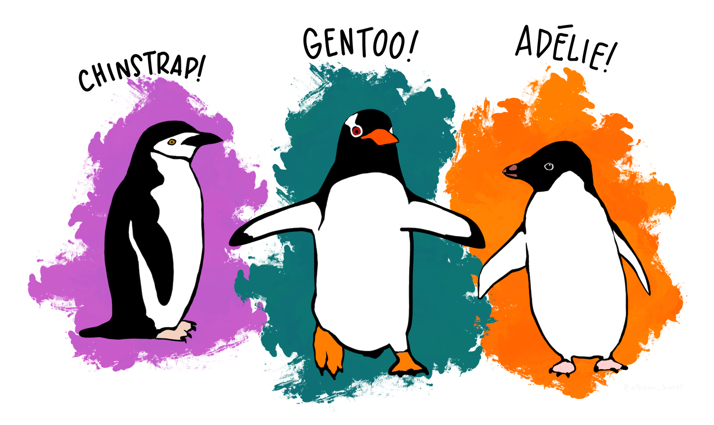
Kaip pasirengti Posit Cloud paskyrą?
- Užsiregistruoti čia.
- Posit pradiniame lange pasirinkti Posit Cloud:
Susikurti naują RStudio aplinką
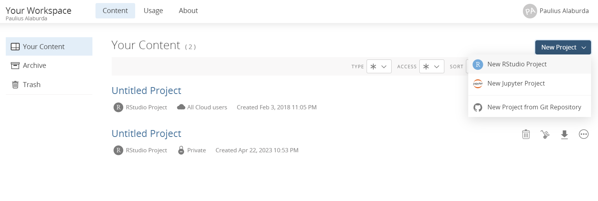
Posit jums sukurs virtualią RStudio aplinką. Ši aplinka yra praktiškai tokia pati kaip parsisiuntus RStudio.
Kas yra tiesiniai modeliai?
Tiesiniai modeliai ranka
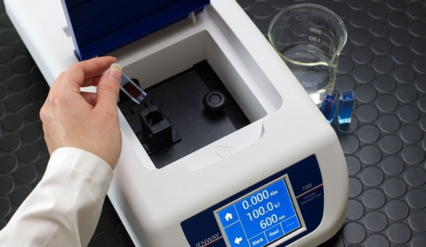
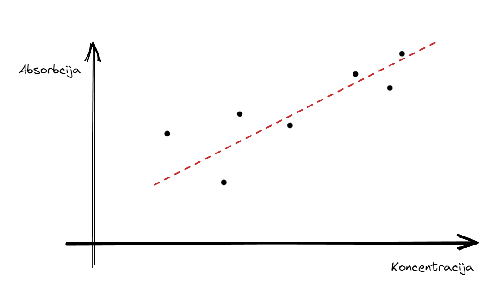
Statistika universitete
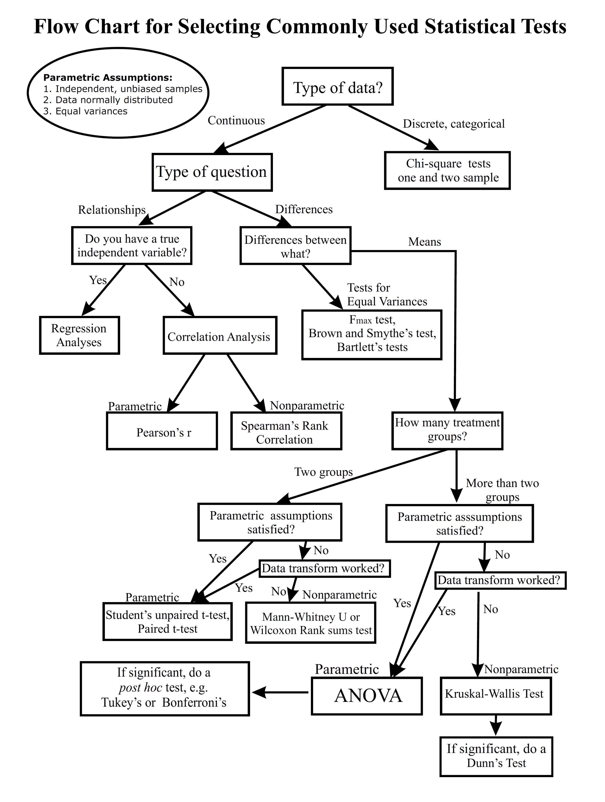
Parametriniai statistiniai testai
Dauguma parametrinių statistinių testų yra specifinės tiesinių modelių versijos.
Tiesiniai modeliai turi formą \(y = a*x + b\), kur y yra mūsų priklausomas kintamasis, o x - nepriklausomas kintamasis.
Pavyzdžiui:
Remiantis lentele, tiesinis modelis galėtų atrodyti taip:
y = 1*x + 10
Bet realybė nėra tokia tvarkinga…
Pavyzdžiui, grafike matome penguins duomenų rinkinio kūno masės ir pelekų ilgį. Panašu, jog priklausomybė yra tiesiška ir proporcinga – kokia pora a ir b kintamųjų geriausiai apibūdintų ryšį?

Kuri tiesė teisinga? Ar tai turėtų būti tiesė apskritai?
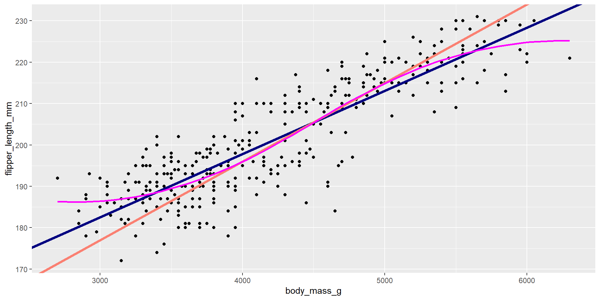
OLS – ordinary least squares (liet. mažiausių kvadratų modelis)
OLS yra tiesinis metodas, kuris nustato nežinomus parametrus tiesinės regresijos modelyje. Metodo tikslas yra sumažinti skirtumų tarp matavimų ir tiesės kvadratų sumą.
Kitaip tariant, metodas nustato, kuri tiesė turi mažiausią paklaidą santykiu su mūsų matavimais.
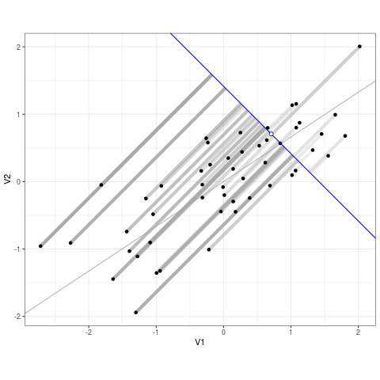
OLS yra labai patogus modelis
- Lengva apibendrinti - nepaisant nepriklausomo kintamojo, ryšys tarp jo ir priklausomo kintamojo visada išlieka toks pats. Galime drąsiai teigti, jog “kiekvienas papildomas pingvino gramas yra susijęs su 0.01528 mm ilgesniu peleku”.
- Lengva interpretuoti - duomenys liko tuose pačiuose matavimo vienetuose. Logistinės regresijos modeliai bei bendriniai tiesiniai modeliai turi būti interpretuojami per šansų santykius bei procentinius pokyčius.
- Greitas - sudėtingi Bajeso modeliai yra tinkamesni, bet gali trukti minutes (o dideli ir valandas!), kol bus apskaičiuoti.
OLS turi savo kainą
- Tiesiniai modeliai taip pat apskaičiuoja paklaidą - ji turi būti vienoda visoje matavimo aibėje (heteroskedatiškumas)
- Tiesiniai modelių paklaida taip pat turi būti pasiskirsčiusi pagal normalųjį skirstinį
- Matavimai turi būti nepriklausomi vienas nuo kito
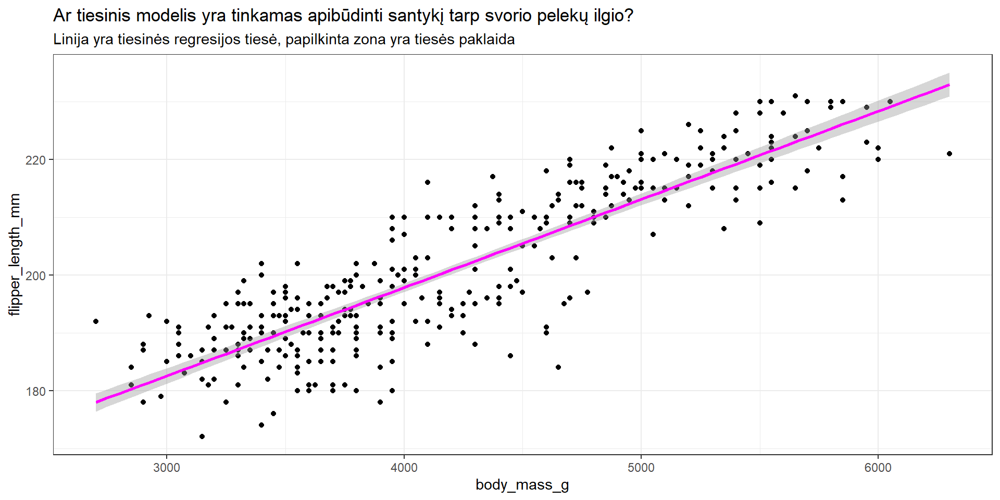
Kada netaikyti tiesinių modelių?
Ar tiesė yra pakankamai geras būdas apibūdinti mano duomenis?
Ar mano imtis yra iš populiacijos, kuri savaime pasiskirsčiusi pagal normalųjį skirstinį?
Likert (pavyzdžiui, 0-5) skalės
Ląstelių skaičius matymo lauke
Ląstelių kolonijos liuminescencija (0-100%)
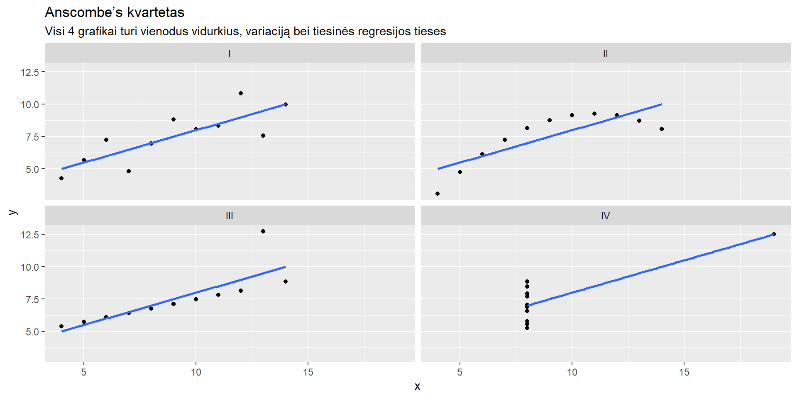
Alternatyva tiesiniams modeliams
Neparametriniai testai yra tiesiog ranginiai modeliai
Grubiai, kiekvienas atitinkamas neparametrinis testas pirma ranguoja duomenis, o tada atlieka statistinį testą.
| Baterija | Minutės | Rangas |
|---|---|---|
| 10% | 0 | 1 |
| 20% | 10 | 2 |
| 30% | 20 | 3 |
| 70% | 60 | 4 |
| 100% | 90 | 5 |
Pavyzdžiui, Spearman koreliacijos koeficientas yra identiškas tiesinės regresijos a koeficientui, jeigu suvienodiname priklausomo ir nepriklausomo kintamojo standartinius nuokrypius.
rho
0.8399741 (Intercept) rank(body_mass_g)
27.1732601 0.8424739 Susipažinimas su RStudio Cloud
Darbui su RStudio Cloud mums reikės šių paketų:
RStudio aplinka
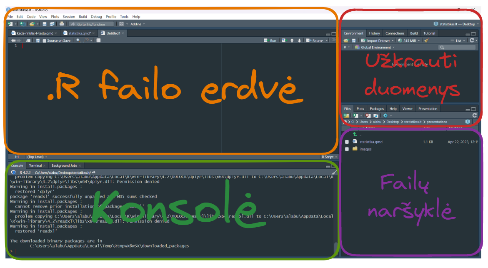
Pagrindiniai statistiniai testai
Pearson koreliacijos koeficientas
Kaip atlikti testą?
Pearson's product-moment correlation
data: penguins$flipper_length_mm and penguins$body_mass_g
t = 32.722, df = 340, p-value < 2.2e-16
alternative hypothesis: true correlation is not equal to 0
95 percent confidence interval:
0.843041 0.894599
sample estimates:
cor
0.8712018 Pearson koreliacijos koeficientas yra koeficientas a, jeigu y ir x turi vienodus standartinius nuokrypius. “Pearson koreliacijos testas atskleidė, jog koreliacija tarp pelekų ilgio ir kūno masės buvo stipri (r = 0,87, 95% PI [0,84-0,89] t(340)=32,72, p < 0,001).”
Kada koreliacija “stipri”?

Iliustracija iš Danielle Navarro knygos “Learning Statistics with R”. Kuo koreliacija yra arčiau nulio, tau labiau mūsų duomenys panašūs į debesėlį. 1 ir -1 yra, atitinkamai, tobula teigiama bei neigiama koreliacija.
Spearman koreliacijos koeficienta
Spearman's rank correlation rho
data: penguins$flipper_length_mm and penguins$body_mass_g
S = 1066875, p-value < 2.2e-16
alternative hypothesis: true rho is not equal to 0
sample estimates:
rho
0.8399741 Spearman rho galima interpretuoti kaip rangų pokytį ant y ašies su kiekvienu x rango pokyčiu. “Atlikus Spearman ranginį koreliacijos testą, koreliacija tarp pelekų ilgio ir kūno masės buvo stipri (r = 0,840, p < 0,001).”
Stjudento t-testas (neporinis)
Kaip atlikti?
Welch Two Sample t-test
data: flipper_length_mm by sex
t = -4.8079, df = 325.28, p-value = 2.336e-06
alternative hypothesis: true difference in means between group female and group male is not equal to 0
95 percent confidence interval:
-10.064811 -4.219821
sample estimates:
mean in group female mean in group male
197.3636 204.5060 “Atlikus Stjudento t-testą, vidutinis pelekų ilgio skirtumas tarp pingvinų lyčių buvo 7,14 mm, skirtumas buvo statistiškai reikšmingas (t(325,28) = 4,80, 95% PI [4,21-10,06], p < 0,001).”
Stjudento t-testas - diagnostika
Stjudento t-testui duomenys turi būti pasiskirstę pagal normalųjį skirstinį
Matavimai turi būti nepriklausomi vienas nuo kito
Naudodami Welch t-testą galime ignoruoti skirtingų variacijų prielaidą
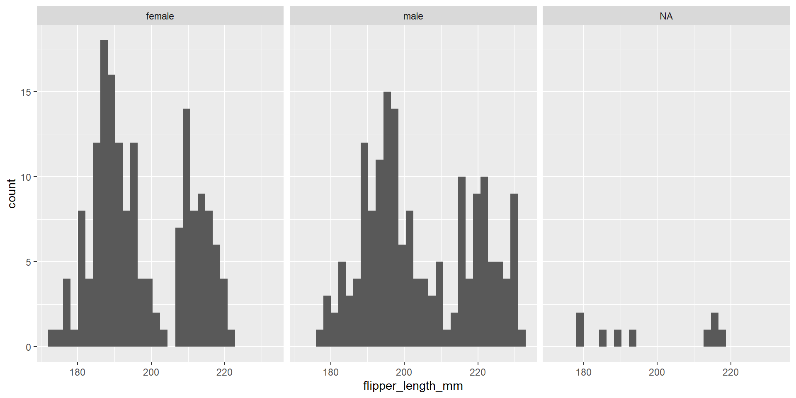
Mann-Whitney U
Wilcoxon rank sum test with continuity correction
data: flipper_length_mm by sex
W = 9547, p-value = 9.011e-07
alternative hypothesis: true location shift is not equal to 0“Atlikus Mann-Whitney U testą, pelekų ilgio skirtumas tarp lyčių buvo statistiškai reikšmingas (W = 9547, p < 0,001).”
Poruotas Stjudento t-testas
Kaip atlikti?
Paired t-test
data: penguins$bill_length_mm and penguins$bill_depth_mm
t = 79.505, df = 341, p-value < 2.2e-16
alternative hypothesis: true mean difference is not equal to 0
95 percent confidence interval:
26.10846 27.43306
sample estimates:
mean difference
26.77076 Wilcoxon ranginis testas
VIenpusė ANOVA
Kaip atlikti?
Df Sum Sq Mean Sq F value Pr(>F)
species 2 146864214 73432107 343.6 <2e-16 ***
Residuals 339 72443483 213698
---
Signif. codes: 0 '***' 0.001 '**' 0.01 '*' 0.05 '.' 0.1 ' ' 1
2 observations deleted due to missingnessAdelie rūšies pingvinai vidutiniškai svėrė 3,70 kg (SD = 0,46), Chinstrap svėrė 3,73 kg (SD = 0,38), Gentoo svėrė 5,08 kg (SD = 0,5). Skirtumas tarp rūšių vidurkių buvo statistiškai reikšmingas (F(2,339) = 343,6, p < 0,001).
Kas yra residuals?
Residuals yra skirtumai tarp tiesinio modelio prognozuojamos reikšmės ir realios reikšmės.
| body_mass_g | predicted | residuals |
|---|---|---|
| 3750 | 3700.662 | 49.33775 |
| 3800 | 3700.662 | 99.33775 |
| 3250 | 3700.662 | -450.66225 |
| 3450 | 3700.662 | -250.66225 |
| 3650 | 3700.662 | -50.66225 |
| 3625 | 3700.662 | -75.66225 |
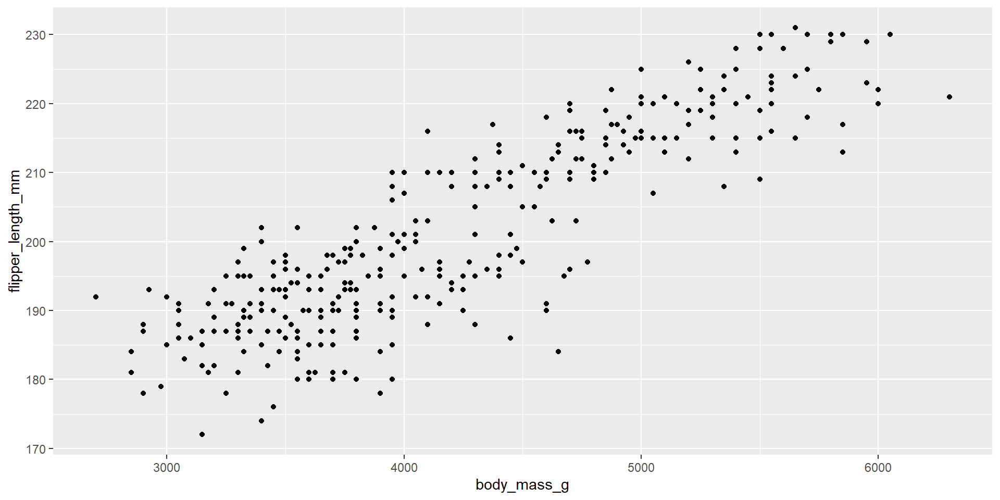
ANOVA diagnostika - heteroskedatiškumas
ANOVA homoskedatiškumo prielaidą tikriname taip:
Levene's Test for Homogeneity of Variance (center = median)
Df F value Pr(>F)
group 2 5.1203 0.006445 **
339
---
Signif. codes: 0 '***' 0.001 '**' 0.01 '*' 0.05 '.' 0.1 ' ' 1Levene testas rodo, jog mes sulaužėme homogeniškos variacijos (homoskedatiškumo) prielaidą ir tokiu būdu mūsų paklaidos nebėra tikslios.
ANOVA diagnostika - residuals su Shapiro-Wilk testu
ANOVA diagnostika - residuals grafiškai
QQ grafikas didžiąja dalimi atitinka tiesę, bet nukrypsta ties labai mažomis ir labai didelėmis reikšmėmis. Histograma taip pat rodo, jog “uodegos” turi daugiau reikšmių negu idealiai norėtume.
Post-hoc testai - Tukey HSD
Tukey HSD (Honestly Significant Difference) yra standartinis būdas patikrinti porinius skirtumus tarp grupių.
Tukey multiple comparisons of means
95% family-wise confidence level
Fit: aov(formula = body_mass_g ~ species, data = penguins)
$species
diff lwr upr p adj
Chinstrap-Adelie 32.42598 -126.5002 191.3522 0.8806666
Gentoo-Adelie 1375.35401 1243.1786 1507.5294 0.0000000
Gentoo-Chinstrap 1342.92802 1178.4810 1507.3750 0.0000000Kruskal-Wallis testas
Kaip atlikti?
Kruskal-Wallis rank sum test
data: body_mass_g by species
Kruskal-Wallis chi-squared = 217.6, df = 2, p-value < 2.2e-16Adelie rūšies pingvinai vidutiniškai svėrė 3,70 kg (SD = 0,46), Chinstrap svėrė 3,73 kg (SD = 0,38), Gentoo svėrė 5,08 kg (SD = 0,5). Skirtumas tarp rūšių buvo statistiškai reikšmingas (χ2(2) = 217,6, p < 0,001).
Post-hoc Dunn testas
Dvipusė ANOVA
Kaip atlikti
Df Sum Sq Mean Sq F value Pr(>F)
species 2 145190219 72595110 758.358 < 2e-16 ***
sex 1 37090262 37090262 387.460 < 2e-16 ***
species:sex 2 1676557 838278 8.757 0.000197 ***
Residuals 327 31302628 95727
---
Signif. codes: 0 '***' 0.001 '**' 0.01 '*' 0.05 '.' 0.1 ' ' 1
11 observations deleted due to missingnessDvipusės ANOVA interpretacija
Kintamųjų įtaka
eta.sq eta.sq.part
species 0.666179534 0.82082499
sex 0.172304745 0.54231166
species:sex 0.007788532 0.05083682ANOVA modelis paaiškina 84,63% pingvinų svorio variacijos. Pingvinų rūšis buvo pagrindinis veiksnys lemiantis pingvinų svorį ir paaiškino 66,62% variacijos. Lytis turėjo mažesnę įtaką variacijai ir paaiškino tik 17,23% variacijos. Sąveika tarp rūšies ir lyties turėjo itin mažą įtaką (0,77%).
Vidutinis svoris grupėje
species*sex effect
sex
species female male
Adelie 3368.836 4043.493
Chinstrap 3527.206 3938.971
Gentoo 4679.741 5484.836
Lower 95 Percent Confidence Limits
sex
species female male
Adelie 3297.597 3972.255
Chinstrap 3422.821 3834.586
Gentoo 4599.820 5406.905
Upper 95 Percent Confidence Limits
sex
species female male
Adelie 3440.074 4114.731
Chinstrap 3631.590 4043.355
Gentoo 4759.662 5562.767Dvipusės ANOVA Tukey’s HSD
Tukey multiple comparisons of means
95% family-wise confidence level
Fit: aov(formula = body_mass_g ~ species + sex + species:sex, data = penguins)
$species
diff lwr upr p adj
Chinstrap-Adelie 26.92385 -80.0258 133.8735 0.8241288
Gentoo-Adelie 1386.27259 1296.3070 1476.2382 0.0000000
Gentoo-Chinstrap 1359.34874 1248.6108 1470.0866 0.0000000
$sex
diff lwr upr p adj
male-female 667.4577 600.7462 734.1692 0
$`species:sex`
diff lwr upr p adj
Chinstrap:female-Adelie:female 158.3703 -25.7874 342.5279 0.1376213
Gentoo:female-Adelie:female 1310.9058 1154.8934 1466.9181 0.0000000
Adelie:male-Adelie:female 674.6575 527.8486 821.4664 0.0000000
Chinstrap:male-Adelie:female 570.1350 385.9773 754.2926 0.0000000
Gentoo:male-Adelie:female 2116.0004 1962.1408 2269.8601 0.0000000
Gentoo:female-Chinstrap:female 1152.5355 960.9603 1344.1107 0.0000000
Adelie:male-Chinstrap:female 516.2873 332.1296 700.4449 0.0000000
Chinstrap:male-Chinstrap:female 411.7647 196.6479 626.8815 0.0000012
Gentoo:male-Chinstrap:female 1957.6302 1767.8040 2147.4564 0.0000000
Adelie:male-Gentoo:female -636.2482 -792.2606 -480.2359 0.0000000
Chinstrap:male-Gentoo:female -740.7708 -932.3460 -549.1956 0.0000000
Gentoo:male-Gentoo:female 805.0947 642.4300 967.7594 0.0000000
Chinstrap:male-Adelie:male -104.5226 -288.6802 79.6351 0.5812048
Gentoo:male-Adelie:male 1441.3429 1287.4832 1595.2026 0.0000000
Gentoo:male-Chinstrap:male 1545.8655 1356.0392 1735.6917 0.0000000O gal tiesiog tiesinis modelis?
Kaip atlikti?
Call:
lm(formula = body_mass_g ~ species * sex, data = penguins)
Residuals:
Min 1Q Median 3Q Max
-827.21 -213.97 11.03 206.51 861.03
Coefficients:
Estimate Std. Error t value Pr(>|t|)
(Intercept) 3368.84 36.21 93.030 < 2e-16 ***
speciesChinstrap 158.37 64.24 2.465 0.01420 *
speciesGentoo 1310.91 54.42 24.088 < 2e-16 ***
sexmale 674.66 51.21 13.174 < 2e-16 ***
speciesChinstrap:sexmale -262.89 90.85 -2.894 0.00406 **
speciesGentoo:sexmale 130.44 76.44 1.706 0.08886 .
---
Signif. codes: 0 '***' 0.001 '**' 0.01 '*' 0.05 '.' 0.1 ' ' 1
Residual standard error: 309.4 on 327 degrees of freedom
(11 observations deleted due to missingness)
Multiple R-squared: 0.8546, Adjusted R-squared: 0.8524
F-statistic: 384.3 on 5 and 327 DF, p-value: < 2.2e-16“Tiesinės regresijos modelis, kur rūšis ir lytis buvo nepriklausomi kintamieji, paaiškina 85,24% kūno svorio variacijos (p < 0,001). Vidutinis Adelie rūšies patelė vidutiniškai svėrė 3,4 kg. Chinstrap rūšies pingvinai svėrė 158 gramais daugiau, skirtumas buvo statistiškai reikšmingas (SE = 64,24, t = 2,47, p = 0,01). Gentoo rūšies pingvinai buvo 1,3 kg sunkesni (SE = 54,42, t = 24,09, p < 0,001). Vidutiniškai patinai tarp visų rūšių buvo sunkesni 674 gramais negu patelės (SE = 51,21, t = 13,17, p < 0,001).”
Diagnostiniai įrankiai taip pat veikia!
Apibendrinimas
Ką reikia žinoti?
Naudokitės grafikais prieš atlikdami bet kokį statistinį testą
Statistinio testo pasirinkimą lemia ne tik surinkti duomenys, bet ir tyrimo dizainas bei mūsų žinios apie tyrimo temą